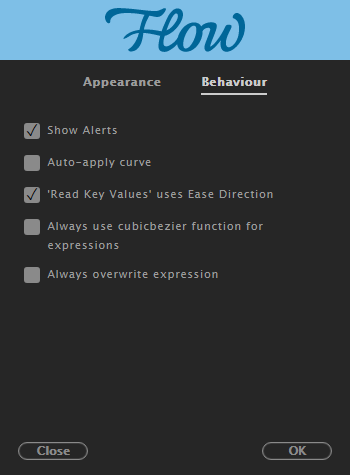

Behaviour¶
Show Alerts¶
Sometimes too many alert messages are overwhelming, especially when you have “Auto-apply curve” enabled. This option reduces the number of alert messages to the minimum.
This feature suppresses alerts for:
- When no composition is active: Please select a composition!
- When no layers are active: Please select some layers!
- Saving items to Library: Nice! Preset “xyz” saved to library
- Item deletion confirmation: Delete Preset? This can’t be undone!
- Item deletion success: Deleted! Preset has been deleted.
- Library export: Good Job! N library curves saved to file “path/to/flow/file.flow”
Auto-Apply Curve¶
When enabled, Flow will apply curve immediately when:
- moving any graph handle
- click any library item
This is a much quicker method of work as it eliminates the need to use the APPLY button.
“Read Key Values” uses Ease Direction¶
In some cases, you may want to read in or out keyframe easings into Flow without modifying the opposing ease direction.
When enabled, Ease Out in Flow’s UI will read in keyframes Ease Out value and leave Ease In untouched in the graph. The same goes for Ease In button.
If Easy Ease is enabled in UI, then Flow will read both “Ease In” and “Ease Out”.
Note
If Apply as Expression is enabled in the interface, then this will read-in values as Ease Ease.
Always use Cubic Bezier function for expressions¶
If you know you just want quartIn interpolation, for example, then you can apply quartIn expression.
However, if you think you may want to change the bezier values later, or have them dynamically controlled with other expressions, then you want this option enabled; this will give you the expression with the cubic bezier approximation values for quartIn, but you can always tweak or adjust it if needed.
Another case when you’d want this on is when you need to match AE animation 100% exactly. In that case, you’ll want the cubic bezier function, as opposed to the quartIn function.
Note
Only applies when Apply as Expression is enabled.
Always overwrite expression¶
When this option is enabled Flow will blindly overwrite existing expression with Flow’s easing expression.
Otherwise if a property you are applying Flow’s expression to already has existing expression, you will get a prompt window to either Overwrite expression, Append to existing expression or Skip this property entirely.
| Overwrite | Wipe out existing expression and apply Flow’s easing expression. |
| Append | Add new easing function to Flow Expression Code block. Note that new functionality will not be evaluated; motion curve will still be the same before you appended new expression. |
| Skip | Skip this property entirely. |
Note
Only applies when Apply as Expression is enabled.